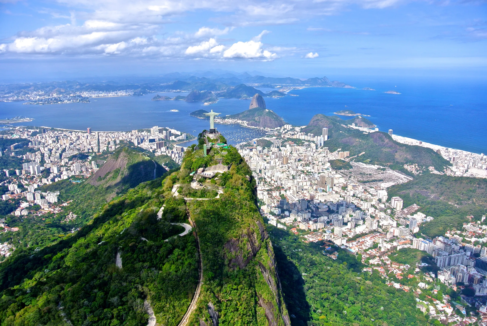
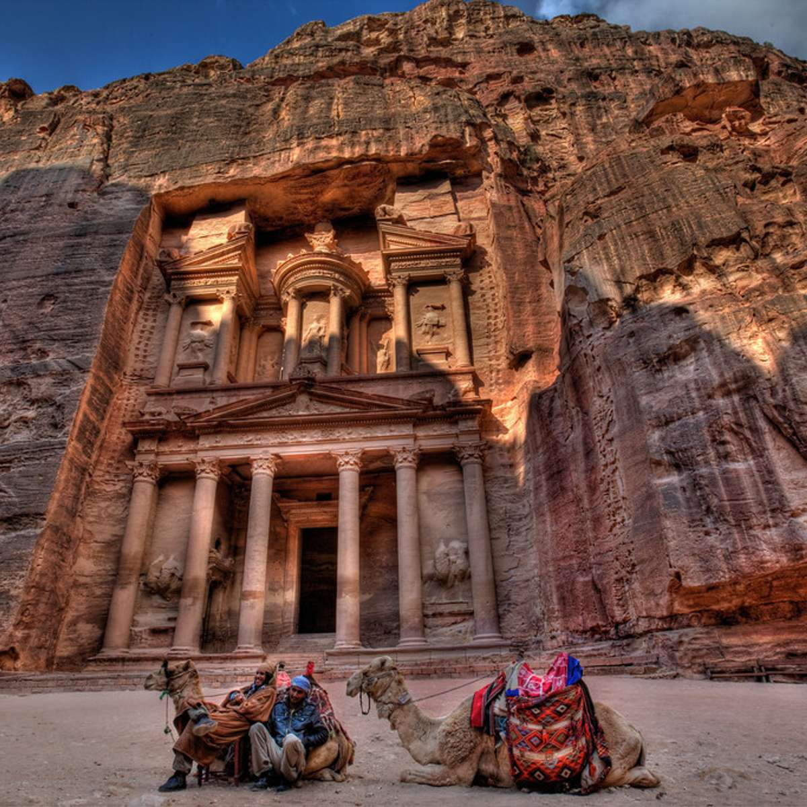

Chichen Itza é uma antiga cidade maia localizada no estado de Yucatán, no México. Conhecida por sua impressionante Pirâmide de Kukulcán, a cidade foi um importante centro religioso e político na época pré-colombiana.
Coliseu
O Coliseu, também conhecido como Anfiteatro Flaviano, é um anfiteatro oval localizado no centro da cidade de Roma, na Itália. Construído no século I d.C., era utilizado para gladiadores e outros espetáculos públicos.

Cristo Redentor
O Cristo Redentor é uma colossal estátua art déco de Jesus Cristo, localizada no topo do Morro do Corcovado, no Rio de Janeiro, Brasil. Reconhecida mundialmente como um ícone cultural e religioso, a estátua foi inaugurada em 1931 e oferece uma vista panorâmica da cidade.
Grande Muralha da China
A Grande Muralha da China é uma série de fortificações construídas ao longo de várias dinastias na China antiga. É a maior estrutura construída pelo homem e uma das mais populares atrações turísticas do mundo. A muralha se estende por milhares de quilômetros, atravessando montanhas, desertos e planícies.
Machu Picchu
Machu Picchu é uma antiga cidade inca localizada nas montanhas dos Andes peruanos. Construída no século XV, a cidade é um exemplo impressionante da arquitetura inca e um Patrimônio Mundial da UNESCO.

Ruínas de Petra
Petra é uma antiga cidade nabateia esculpida em rochas de arenito na Jordânia. Conhecida como a "Cidade Rosa", Petra foi um importante centro comercial na Rota da Seda.
Taj Mahal
O Taj Mahal é um majestoso mausoléu de mármore branco localizado em Agra, na Índia. Construído no século XVII pelo imperador Mughal Shah Jahan em memória de sua esposa, o Taj Mahal é considerado uma das joias da arquitetura muçulmana.